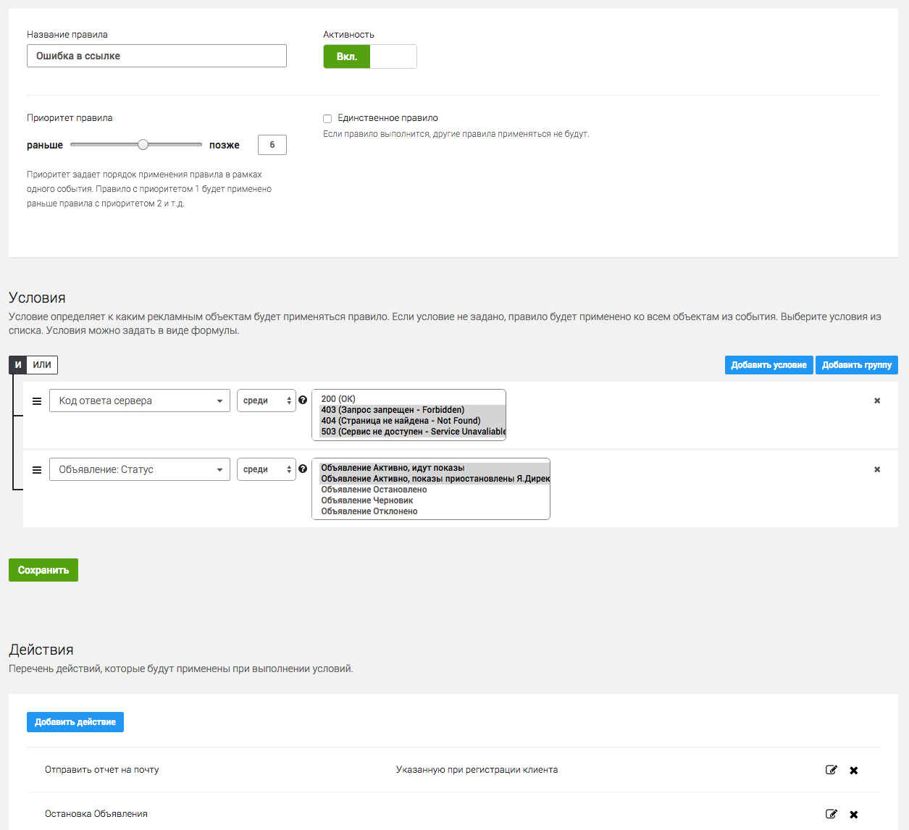
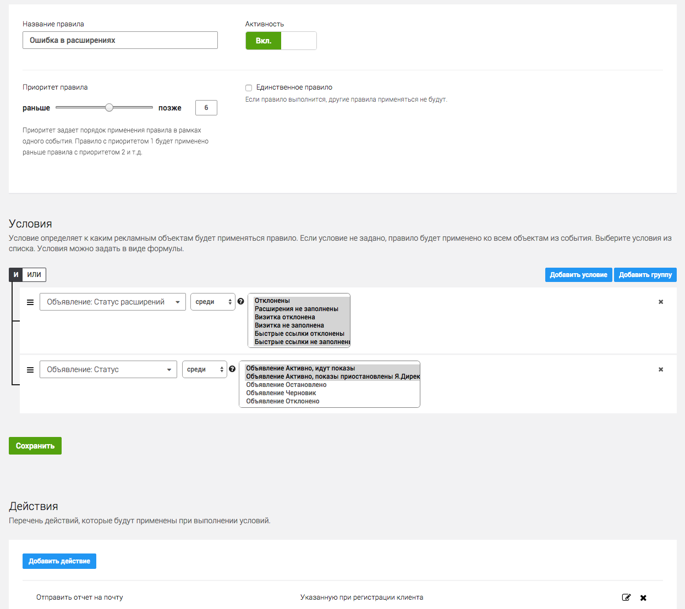
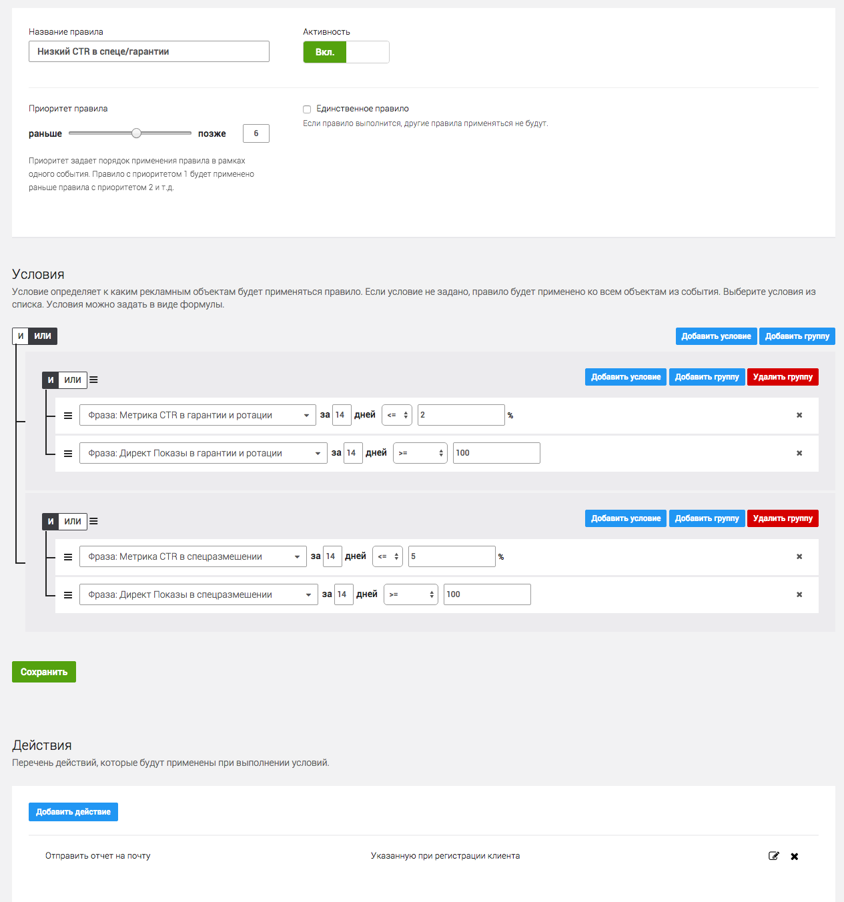
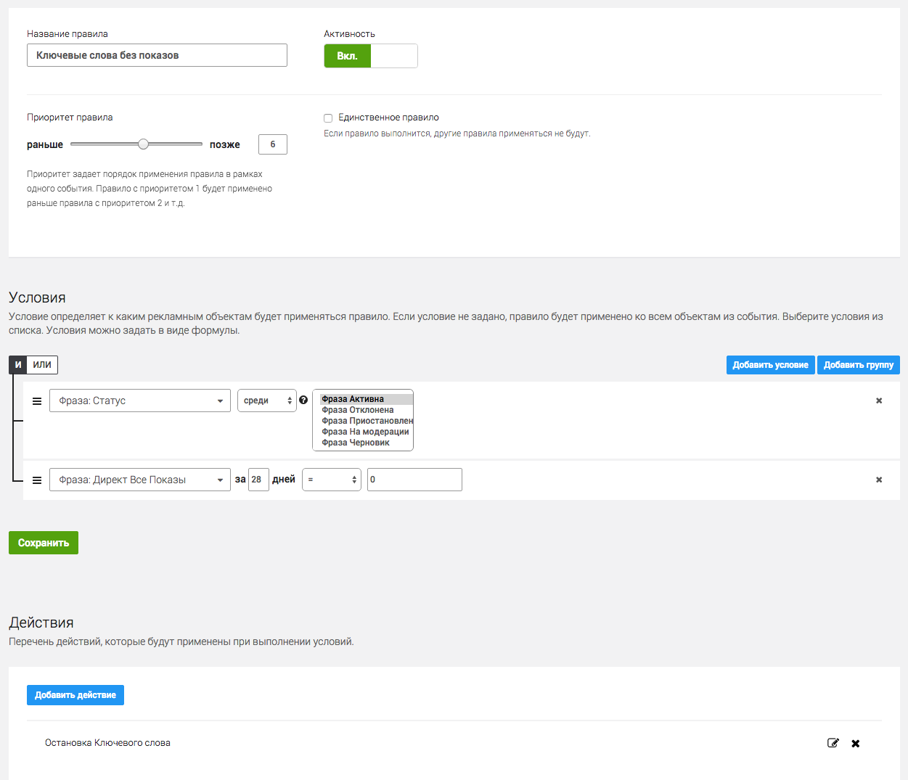
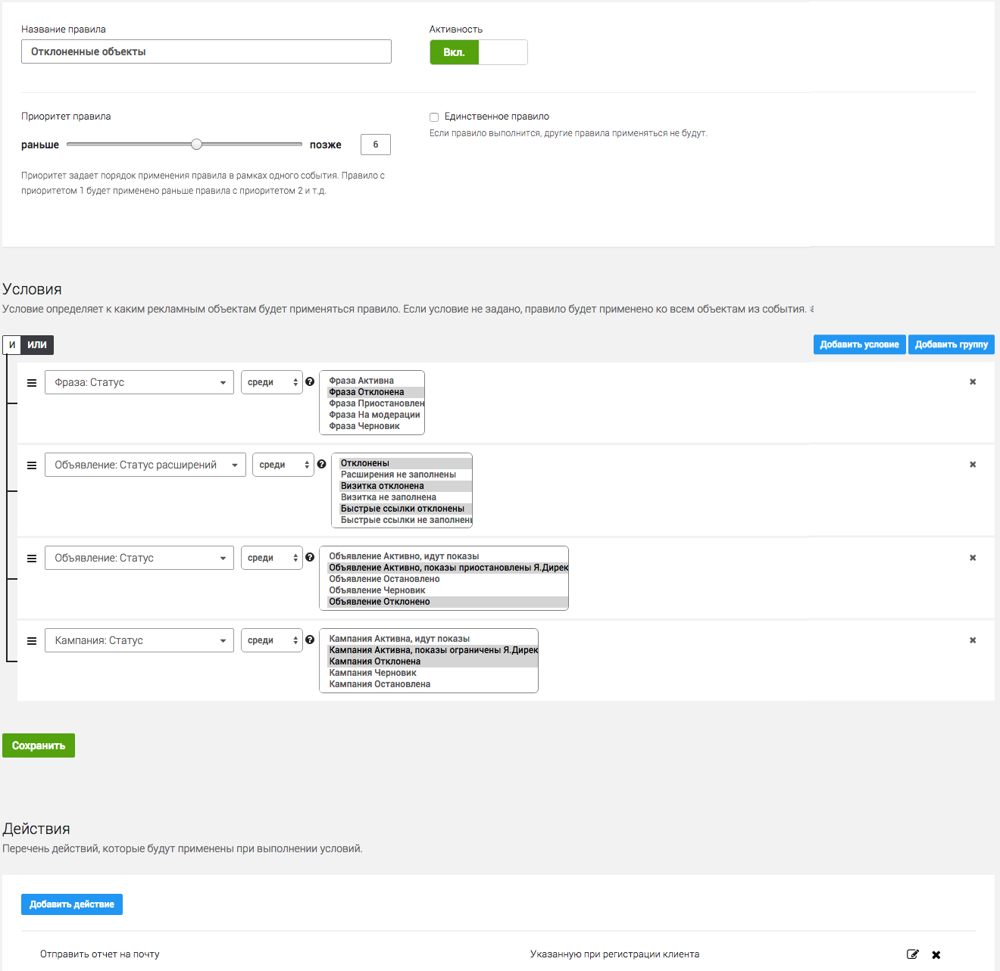

Правила для улучшения показателя качества рекламного аккаунта
К50:Правила - сервис для автоматического управления аккаунтом по заданным правилам. С его помощью вы можете задать логику управления аккаунтом, а сервис сам будет выполнять действия по заданному расписанию.
Поиск ссылок, ведущих на 404 ошибку
Простое и необходимое правило, которое находит ссылки ведущие на страницы с заданным кодом ответа сервера: 200, 404, 403, 503 и т.д. В качестве действия лучше всего подойдет остановка таких объявлений и отправка отчета на почту. Как правило выглядит в интерфейсе:

Поиск объявлений с ошибкой в расширениях
Наличие визитки влияет не только на качество аккаунта, но и на отображение объявления в рекламном блоке, а так же дает дополнительную информацию пользователю. В качестве действия подойдет - отправить отчет на почту. В отчете будет содержаться id-объявления и id-кампании поэтому найти эти объявлений в рекламной кампании не составит труда.
В данном примере мы находим все ошибки в расширениях активных объявлений: визитка не заполнена, визитка отклонена, быстрые ссылки отклонены, быстрые ссылки не заполнены:

Поиск объявлений с низким CTR
Низкий CTR влияет на стоимость клика, а так же может сказать об общей релевантности объявления ключевому слову. Стандартный отчет по CTR можно посмотреть и в мастере отчетов Яндекс.Директ, однако мы рекомендуем разделять CTR в гарантии и спец.размещении, т.к. он может в разы отличаться, в зависимости от позиции объявления.
В данном примере мы находим слова с CTR ниже 2% в гарантии или ниже 5% в спеце и с количеством показов больше 100 и отправляем отчет на почту:

Поиск ключевых слов без показов
Это правило скорее подходит для больших проектов с очень широкой семантикой. С его помощью можно находить фразы по которым не было показов за заданные период.
Таким образом можно найти фразы по которым не было показов за 28 дней и остановить их:

Проверка отклоненных объектов в РК
При условии большого аккаунта бывает сложно уследить за модерацией всех рекламных объектов. При помощи этого правила можно найти все отклоненные, не прошедшие модерацию, сущности. А так же объекты, показ которых остановлен из-за ограничений Я.Директ (дневной бюджет или временной таргетинг).
В данном примере правила мы находим все отклоненные фразы/объявления/расширения/кампании. В качестве действия выбран отчет на почту:
